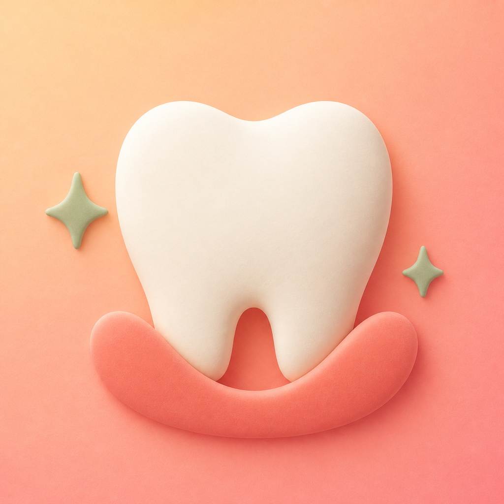
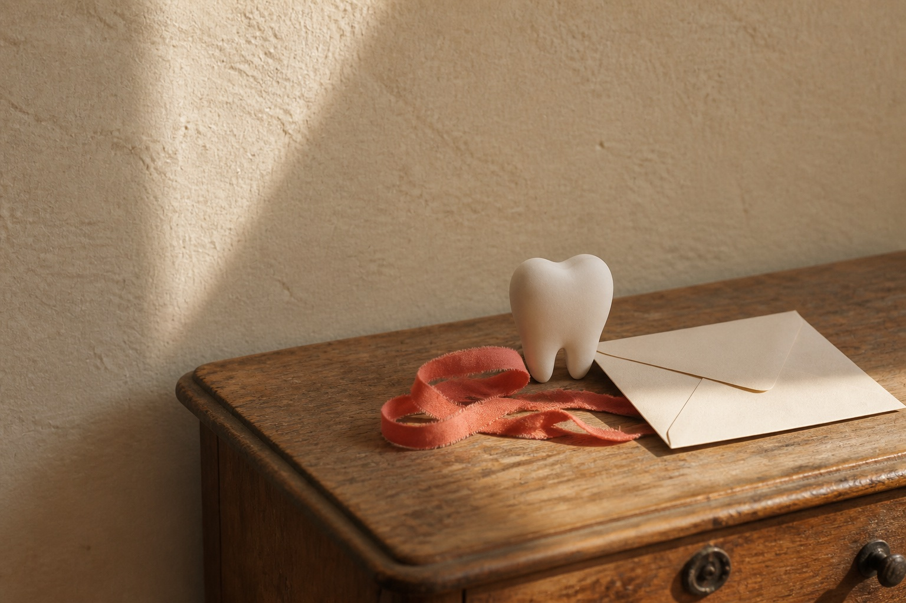

01
One timeline per child
Profiles, birth dates, tooth progress, notes, history and exports remain separate for each child.

Petites DentsA private family archive
1.0.7 / 20
A keepsake timeline, not dental guidance
A private first-teeth timeline


Annotations from the family archive
01
Profiles, birth dates, tooth progress, notes, history and exports remain separate for each child.
02
Record when teething began, when a tooth erupted and the detail you want to remember.
03
Create a readable summary on the device, then keep it or share it through the system sheet.
A private keepsake for your baby’s first teeth.
INTERACTIVE MOUTH; Follow the 20 primary teeth in anatomical order: not started, emerging or erupted.
DATES AND OBSERVATIONS; Record dates, exact age at eruption, notes and a chronological history.
LOCAL PDF KEEPSAKE; Create a readable PDF on your device to keep or share through the system sheet. This is a personal journal, not dental guidance or diagnosis.
Human support
Send a message through the private support form. No developer email address is published.